measures-of-effect.RmdEpidemiological studies typically seek to address the relationship between an exposure and outcome. The magnitude of the relationship between these two variables can be described by measures of effect. Summary measures can be relative (odds ratio and risk ratio) or absolute (risk difference). The twoxtwo package includes functions to directly calculate measures of effect based on the specified exposure and outcome variables.
The content below will walk through how each measure of effect is calculated, as well as considerations for comparing measures. The examples use the titanic dataset from the twoxtwo package1. Note that the formulas will use the two-by-two notation described in the “Basic Usage” vignette2.
The odds ratio is a relative effect measure describing the odds of an outcome among those exposed compared to those unexposed. Odds are mathematically related to probability (P) as follows:
\[\frac{P}{1-P}\]
The odds ratio is typically oriented as the odds in the exposed group divided by the odds in the unexposed:
\[\frac{\frac{P_{exposed}}{1-P_{exposed}}}{\frac{P_{unexposed}}{1-P_{unexposed}}}\]
Taking counts and notation from the two-by-two table, the odds ratio formula can be written as:
\[\frac{\frac{\frac{A}{A+C}}{1-{\frac{A}{A+C}}}}{\frac{\frac{B}{B+D}}{1-{\frac{B}{B+D}}}}\] … and simplified to:
\[\frac{A\times{D}}{B\times{C}}\] The formula above will yield a point estimate for the odds ratio. Using the same two-by-two notation, the natural log of the standard error around the point estimate can be calculated as follows:
\[\sqrt{\frac{1}{A} + \frac{1}{B} + \frac{1}{C} + \frac{1}{D}}\]
To calculate the odds ratio (and a confidence interval based on the standard error) with twoxtwo:
library(twoxtwo)
titanic %>%
odds_ratio(.data = ., exposure = Crew, outcome = Survived)
# # A tibble: 1 × 6
# measure estimate ci_lower ci_upper exposure outcome
# <chr> <dbl> <dbl> <dbl> <chr> <chr>
# 1 Odds Ratio 0.516 0.426 0.624 Crew::TRUE/FALSE Survived::Yes/NoRisk ratio (also known as relative risk) is another relative effect measure. Risk is the probability of an outcome. When stratified by exposure status, the ratio of risk in the exposed relative to the unexposed can be expressed as follows:
\[\frac{P_{exposed}}{P_{unexposed}}\] In two-by-two notation:
\[\frac{\frac{A}{A+B}}{{\frac{C}{C+D}}}\] The standard error of the risk ratio can be expressed on the natural log scale as:
\[\sqrt{\frac{1-\frac{A}{A+B}}{(A+B)\times\frac{A}{A+B}} + \frac{1-\frac{C}{C+D}}{(C+D)\times\frac{C}{C+D}}}\]
… and simplified to:
\[\sqrt{\frac{1}{A} - \frac{1}{A+B} + \frac{1}{C} - \frac{1}{C+D}}\] To calculate the risk ratio (and a confidence interval based on the standard error) with twoxtwo:
titanic %>%
risk_ratio(.data = ., exposure = Crew, outcome = Survived)
# # A tibble: 1 × 6
# measure estimate ci_lower ci_upper exposure outcome
# <chr> <dbl> <dbl> <dbl> <chr> <chr>
# 1 Risk Ratio 0.632 0.551 0.724 Crew::TRUE/FALSE Survived::Yes/NoIn addition to relative measures, epidemiological effects can also be described in absolute terms. The risk difference is an absolute measure of risk. Risk difference is typically oriented with the risk of an outcome in the exposed minus the risk of the same outcome in the unexposed:
\[P_{exposed}-{P_{unexposed}}\] In two-by-two notation:
\[\frac{A}{A+B} - \frac{C}{C+D}\] The standard error around the risk difference estimate can be calculated as follows:
\[\sqrt{\frac{A\times{B}}{(A+B)^3} + \frac{C\times{D}}{(C+D)^3}}\] To calculate the risk difference (and a confidence interval based on the standard error) with twoxtwo:
Choosing an appropriate effect measure depends on how the data are collected (i.e. the study design). There are many different study designs that can help address epidemiological questions. For example, one could use an unmatched case control study by which exposure status is assessed among identified cases (“outcome +”) versus controls (“outcome -”). By including individuals in the study based on outcome, it is no longer appropriate to calculate risk (or a risk ratio) directly. However, one can compute an odds ratio, which is the measure of effect most commonly reported from case control studies.
In considering how to compare measures of effect, it is worth emphasizing that relative measures are mathematically related to one another. These relationships can confer convenient properties for interpretation. For example, recall the distinction between odds and probability (risk) of an outcome. Given its formula, the odds will always overestimate risk. The same can be assumed true for an odds ratio and risk ratio when computed from an identical two-by-two table.
While the odds ratio will always overestimate the risk ratio, the degree to which the measures differ depends in part on the rarity of the outcome being studied. This property is summarized in what is sometimes referred to as the rare disease assumption. The less common an outcome, the closer the odds ratio will approximate the risk ratio. And vice versa. As such, in some cases it may or may not be appropriate to interpret an odds ratio as an approximation of the risk ratio.
The code below uses twoxtwo functionality (with some help from dplyr, tidyr, purrr, and ggplot2) to illustrate the relationship between the odds ratio and risk ratio. In doing so, the example also demonstrates the effect of outcome incidence proportion (i.e. how rare the outcome is) on the degree to which the odds ratio overestimates the risk ratio.
library(dplyr)
library(tidyr)
library(purrr)
library(ggplot2)
## write a helper function to compute odds ratio and risk ratio
## this function will stack the two outputs on top of one another as a tibble
or_rr <- function(incidence = 0.8) {
## define counts in two-by-two cells based on the incidence proportion
A <- round(100*incidence)
B <- 100 - A
C <- 10
D <- 90
## create a tibble with observation level data from the counts above
dat <-
tribble(~x, ~y, ~n,
TRUE, TRUE, A,
TRUE, FALSE, B,
FALSE,TRUE, C,
FALSE, FALSE, D) %>%
uncount(n)
## calculate odds ratio and risk ratio
or <- odds_ratio(dat, exposure = x, outcome = y)
rr <- risk_ratio(dat, exposure = x , outcome = y)
## stack the two on top of one another
## add a column with incidence
bind_rows(or,rr) %>%
mutate(Incidence = incidence)
}
## iterate over all incidence values from 0.025 to 0.5 (in 0.025 increments)
## combine results as a tibble
res <-
seq(0.025, 0.5, by = 0.025) %>%
map_df(., or_rr)| Incidence | Odds Ratio | Risk Ratio |
|---|---|---|
| 0.025 | 0.184 | 0.2 |
| 0.050 | 0.474 | 0.5 |
| 0.075 | 0.783 | 0.8 |
| 0.100 | 1.000 | 1.0 |
| 0.125 | 1.227 | 1.2 |
| 0.150 | 1.588 | 1.5 |
| 0.175 | 1.976 | 1.8 |
| 0.200 | 2.250 | 2.0 |
| 0.225 | 2.538 | 2.2 |
| 0.250 | 3.000 | 2.5 |
| 0.275 | 3.500 | 2.8 |
| 0.300 | 3.857 | 3.0 |
| 0.325 | 4.433 | 3.3 |
| 0.350 | 4.846 | 3.5 |
| 0.375 | 5.516 | 3.8 |
| 0.400 | 6.000 | 4.0 |
| 0.425 | 6.789 | 4.3 |
| 0.450 | 7.364 | 4.5 |
| 0.475 | 8.308 | 4.8 |
| 0.500 | 9.000 | 5.0 |

Ranganathan, P., Aggarwal, R., & Pramesh, C. S. (2015). Common pitfalls in statistical analysis: Odds versus risk. Perspectives in clinical research, 6(4), 222–224. https://doi.org/10.4103/2229-3485.167092
Tripepi, G., Jager, K. J., Dekker, F. W., Wanner, C., & Zoccali, C. (2007). Measures of effect: relative risks, odds ratios, risk difference, and ‘number needed to treat’. Kidney international, 72(7), 789–791. https://doi.org/10.1038/sj.ki.5002432
Walter S. D. (2000). Choice of effect measure for epidemiological data. Journal of clinical epidemiology, 53(9), 931–939. https://doi.org/10.1016/s0895-4356(00)00210-9
Szklo, M., & Nieto, F. J. (2007). Epidemiology: Beyond the basics. Sudbury, Massachussets: Jones and Bartlett.
Keyes, K.M, & Galea S. (2014). Epidemiology Matters: A new introduction to methodological foundations. New York, New York: Oxford University Press.
To read the twoxtwo “Basic Usage” vignette: vignette("basic-usage", package = "twoxtwo")↩︎